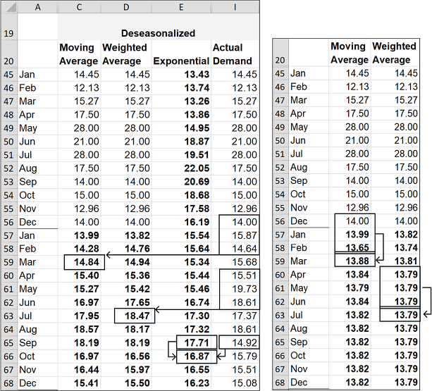
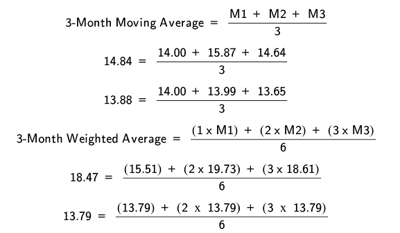
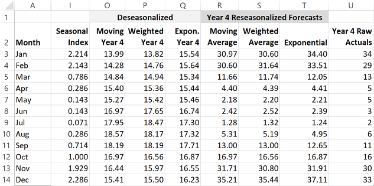
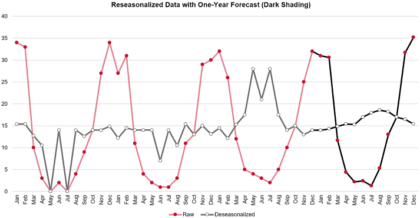
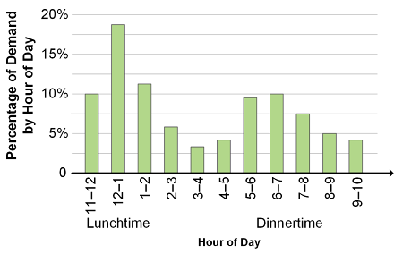

Here we look at forecast error and accuracy and the effect of bias and random variation along with several error-tracking methods: mean absolute deviation, the tracking signal, standard deviation, mean squared error, and mean absolute percentage error.
Since the first principle of forecasting is that forecasts are (almost) always wrong, organizations need to track forecasts against actual demand results and find ways to measure the size and type of error. Note that the size of an error can be measured in units or percentages, but often finding a way to put a monetary value on the error can help in focusing on the most expensive errors. (Being off by 1,000 on an item that costs US$1 will differ significantly from the same amount of error for an item that costs US$100.) Forecasters can use error measurements to modify forecasts to reduce the amount (and costliness) of error. If software does your calculations, the program can select the smoothing constant that will reduce your historical forecast errors to a minimum.
Forecast error is "the difference between actual and forecast demand" (ASCM Supply Chain Dictionary).
The formula for forecast error as an absolute value follows. (Assume a time-series forecasting result with actual demand of 29 units and forecast demand of 33.51 units.)
An absolute value is a number that is stated without regard to positive or negative signs, so the absolutes of +4.51 and -4.51 are both 4.51. The equation above expresses the absolute value mathematically using vertical bars, e.g.,│-4.51│ = 4.51. Absolute values of forecast error are used in some of the error tracking methods discussed elsewhere, such as mean absolute deviation.
When expressing forecast error as a percentage (also known as absolute percentage error [APE]), the equation is as follows (with a continuation of the prior example):
Forecast accuracy is simply the complement of the forecast error as a percentage, expressed as follows (with a continuation of the prior example):
Forecast error can be the result of bias or random variation.
📖 ASCM Definition — bias:
Bias exists when the cumulative actual demand differs from the cumulative actual forecast. For example, if actual demand is 34, 29, and 13, cumulative actual demand adds these amounts to arrive at 76. If the forecast demand is 34.4, 33.51, and 12.05, the cumulative forecast demand is 79.96. Calculating bias can use a variation on the forecast error calculation, but it doesn't use absolute amounts because the plus or minus sign can show the direction of the bias:
Any answer that does not result in zero reflects a bias. The size of the number reflects the relative amount of bias that is present. A negative result shows that actual demand was consistently less than the forecast, while a positive result shows that actual demand was greater than forecast demand.
Bias could be the result of a temporary situation or an unaccounted-for change in a trend or seasonal effect. Tracking the circumstances surrounding each significant bias can help distinguish between the two. For example, bias caused by a one-time bulk sales order would not require modifying the forecasting model, but a significant shift in a trend or seasonal effect (or shifts in the timing of these effects to earlier or later periods) requires changes to the forecasting model (e.g., seasonal index or smoothing constant) or process (e.g., could be a result of overly optimistic qualitative adjustments).
Random variation. In terms of measuring errors, random variation is any amount of variation in which the cumulative actual demand equals the cumulative forecast demand. For example, if actual demand is 100 for three periods, cumulative actual demand is 300, and if forecast demand is 90, 110, and 100, the cumulative forecast demand is 300. Because of the zero net difference, the error over this period can be said to be the result of random variation. Note that wide swings in either direction that just happen to balance out would still be difficult to plan around.
A common way of tracking the extent of forecast error is to add the absolute period errors for a series of periods and divide by the number of periods. This gives you the mean absolute deviation (MAD). Note: In the formula below, the Greek uppercase letter ∑ stands for "the sum of."
📖 ASCM Definition — mean absolute deviation (MAD):
With absolute values, whether the forecast falls short of demand or exceeds demand doesn't matter; only the magnitude of the deviation counts in MAD.
We can see how this works using the time-series demand and smoothing forecast example shown in Exhibit 1-40. Note that error rates for all three methods are shown, but we will focus on the exponential smoothing method primarily.

A MAD of 1.68 units implies that forecasts are off on average for the review period by about plus or minus 1.68 units. Exhibit 1-41 shows MAD from Exhibit 1-40.

MAD may be used as the basis for safety stock calculations. This is because when a forecast is in error and lower demand is planned for than the actual demand that occurs, stockouts could result. Higher levels of safety stock will be needed to safeguard against those less probable events at the stockout end of the normal distribution curve.
In Exhibit 1-41, the center is the average or central tendency, which would be a forecast matching actual demand in this example. The left-hand side of the curve is the likelihood that demand will be less than the forecast, which means that 50 percent of the time there will be sufficient inventory or possibly an overstock situation. The right-hand side of the curve is the likelihood that demand will be greater than the forecast, or a potential stockout situation if not enough safety stock is held.
Note that this is a normal MAD distribution curve. In the exhibit, ±1 MAD, or up to ±1.68 units in error, should be experienced 60 percent of the time (plus or minus 30 percent from the mean). For a stockout probability, 1 MAD adds the 50 percent overstock probability to the 30 percent zone for 1 MAD for an 80 percent probability that there will still be sufficient stock if 1.68 units are held as safety stock (two units if rounded up). Moving further out in the curve, ±2 MAD means that in some instances the error will be up to two mean absolute deviations, and adding the two 15 percent zones means that 90 percent of results should be within ±2 MAD, or ±3.36 units (1.68 × 2). Again, for a stockout probability, 2 MAD adds the 50 percent overstock probability to the 30 percent zone for 1 MAD and the 15 percent zone for 2 MAD, to equal a 95 percent probability that sufficient inventory will be in stock if at least 3.36 units are held as safety stock (four units rounded up). Similarly, 98 percent of all results should fall within ±3 MAD, or ±5.04 units (1.68 × 3), which equates to about a 99 percent probability that there will be no stockouts if at least 5.04 units (six units rounded up) of safety stock are held. The chance of a stockout is calculated as one minus the percent chance of sufficient inventory. For 2 MAD, this is 1 − 0.95 = 0.05 = 5 percent chance of stockout.
📖 ASCM Definition — safety factor:
Exhibit 1-42 shows a safety factor table.
For the purposes of the following example, note how a 98 percent service level has a safety factor of 2.56 MAD (or 2.05 if standard deviation in units is known).
Note also the relationship between standard deviation and MAD. Look at the 84.13 percentile customer service level row. When the factor for standard deviation is 1.0, the factor for MAD is 1.25. In fact this relationship continues throughout. A rule of thumb is that multiplying MAD times 1.25 results in an approximation of standard deviation. For example, multiplying 1.0 MAD in units times its 1.25 factor for the 84.13 service level equals 1.25 units of safety stock. Multiplying 1.25 SD in units times its 1.00 factor for the same service level would also equal 1.25 units of safety stock.
According to the ASCM Supply Chain Dictionary, the tracking signal is "the ratio of the cumulative algebraic sum of the deviations between the forecasts and the actual values to the mean absolute deviation."
The tracking signal can be calculated as shown in Exhibit 1-43 (Note that the example uses data from column AF.)

The algebraic sum of forecast errors is a cumulative sum that does not use absolute values for the errors. Therefore the tracking signal could be either positive or negative to show the direction of the bias.
Organizations use a tracking signal by setting a target value for each period, such as ±4. If the tracking signal exceeds this target value, a forecast review would be triggered.
Many organizations calculate and track each stock keeping unit (SKU) on a monthly basis. This helps measure two aspects of the forecast:
📖 ASCM Definition — standard deviation:
A formula for standard deviation is commonly available in most forecasting or spreadsheet software programs. Note that standard deviation measures the amount of variation in actual results from the central tendency (the peak of the bell curve) and does not use forecast error as an input but rather assesses the relative level of variability of actual results as a proxy for how much error in a forecast is likely. It can also be used to determine how much safety stock to use using a safety factor table. (There is a variant called root mean squared error that does use forecast error as an input.)
Note how in the definition, standard deviation divides by n - 1. This formula is used in the more common situation when this is a sample of data that you want to extrapolate to the whole population; n is instead used as the denominator when you are using the entire set of data and don't need to extrapolate. Alternatively, some practitioners use n- 1 when there are 30 or fewer samples from the population and n when there are more samples than these, since the effect being corrected for is not as important when more samples than these are used.
The more common formula for standard deviation follows. (Note: In the formula below, the Greek uppercase letter ∑ stands for "the sum of.")
Exhibit 1-44 shows a bell curve for standard deviation along with the percentage probabilities of a result being in a particular number of standard deviations from the mean (center dotted line). For example, 1 SD is 34.13 percent and 2 SD adds 13.59 percent more probability, so the chance of a stockout at 2 SD is the sum of these amounts, or 47.72 percent. However, since there is also a 50 percent chance of an overstock (left side of the bell curve), this is also added, which results in a 97.72 percent chance of an item being in stock at 2 SD.

If standard deviation is the information you have at your disposal, you can use a safety factor table to calculate the safety stock at a given service level.
Let's assume SD of 2.1 units. Also assume a desired 98 percent service level, which is a safety factor of 2.05. This results in a need to hold about five units of safety stock:
Another method of calculating error rates, the mean squared error (MSE), magnifies the errors by squaring each one before adding them up and dividing by the number of forecast periods. Squaring errors effectively makes them absolute, since multiplying two negative numbers always results in a positive number.
Note that the errors are squared before being summed, which requires new columns in the worksheet, as shown in Exhibit 1-45. The formula for mean squared error follows (with an example from the exhibit below):
Note in Exhibit 1-45 how the process of squaring each error using the MSE method gives you a much wider range of numbers than when the mean absolute deviation (MAD) is used. For example, in row 4 of the spreadsheet, the MAD for the exponential smoothing method is -4.51 while with MSE it is the 20.31. In addition to the large results being much larger, fractional results become smaller. This is seen in row 3 of the spreadsheet, where the MAD is -0.40 but squaring this for MSE results in 0.16.
The greater range gives you a more sensitive measure of the error rate, which is especially useful if the absolute error numbers are relatively close together and reduction of errors is important.

Measuring the extent of deviation helps determine the need to improve forecasting or rely on safety stock to meet customer service objectives.
There is a drawback to the MAD calculation in that it is an absolute number that is not meaningful unless compared to the forecast. Mean absolute percentage error (MAPE) is a useful variant of the MAD calculation because it shows the ratio, or percentage, of the absolute errors to the actual demand for a given number of periods. The example continues the study of the exponential forecast error in Exhibit 1-46.
Exhibit 1-46 shows how the absolute percentage error (APE) is first determined for each period by taking the absolute error divided by the actual demand. This is done for each month in a new set of columns. Then, the sum of the APE (percentage) for periods 1 through 12, which is 206.9 percent for the exponential method (see column AA), is divided by the number of periods, 12 in the example, to calculate the MAPE. On average, MAPE is 17.2 percent.
Note that the result is expressed as a percentage. Exception rules for review can be applied to any stock keeping unit or product family that has a MAPE above a certain percentage value.
Percentage-based error measurements such as MAPE allow the magnitude of error to be clearly seen without needing detailed knowledge of the product or family, whereas an absolute error in units (or an error in dollar amounts) requires knowing what is considered normal for the product or product family.